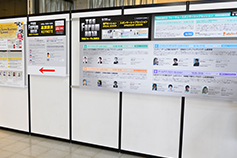

※写真は、2012～2013年のときのものです。参考としてご覧ください。
幕張メッセへは、最寄りのJR京葉線「海浜幕張」駅から歩くか（５分程度）、JR総武線「幕張本郷」駅から、会場近くまでバスに乗るのが便利です（アクセスガイドはコチラ  ）。ビジネスデイは、海浜幕張駅から会場への誘導はありません。初めての方は駅から会場への行き方を事前にご確認ください。
）。ビジネスデイは、海浜幕張駅から会場への誘導はありません。初めての方は駅から会場への行き方を事前にご確認ください。
入場受付（2Fコンコース 2ホール前）は、午前8時から始まります。受付でご本人確認を済ませてから（「事前登録完了メールに添付されているWebチケットのプリントアウト(A4サイズ)」「写真入り身分証明書」「名刺」をご用意ください）、ビジネスデイ来場者バッジを受け取り、入場待機列に並んでいただきます。
例年ですと、午前９時前に受付に並んでいただいた方は、10時の開場後、それほど待たずにご入場いただけています（あくまでも目安なので確約はできません。アポイントの時間などには余裕をもってお越しください）。
車で来場する場合、隣接する幕張メッセ駐車場が使えます。営業時間は８時～23時で、料金は普通車1日1,000円です。例年であれば駐車が可能です。そのほか、近隣には、24時間利用できる駐車場もあります（駐車場の情報はコチラ ）。
「基調講演 」は、東京ゲームショウの入場受付をしていなくても聴講できます。
」は、東京ゲームショウの入場受付をしていなくても聴講できます。
入場受付をする時間がない場合は、直接、「8ホール イベントステージ」の「基調講演」受付までお越しください。
事前申込いただいた方は、Webチケットのプリントアウトを「基調講演」受付でご提示ください。当日受付の方は、名刺が必要です。ただし、事前申込した方が優先されますので、聴講できない場合があります。ご了承ください。

9月18日（木）の午後に開催される「アジア・ゲーム・ビジネス・サミット 」は、東京ゲームショウの入場受付をしていなくても聴講できます。
」は、東京ゲームショウの入場受付をしていなくても聴講できます。
入場受付をする時間がない場合は、直接、「8ホール イベントステージ」の「アジア・ゲーム・ビジネス・サミット」受付までお越しください。
事前申込いただいた方は、Webチケットのプリントアウトを受付でご提示ください。当日受付の方は、名刺が必要です。ただし、事前申込をした方が優先されますので、聴講できない場合があります。ご了承ください。
9月19日（金）の午後に開催される「専門セッション 」は、東京ゲームショウの入場受付をしていなくても聴講できます。
」は、東京ゲームショウの入場受付をしていなくても聴講できます。
入場受付をする時間がない場合は、直接、国際会議場2Fの「専門セッション」受付までお越しください。
事前申込した方（前売り：１セッション8,000円／ビジネスデイ事前登録申込券付き）は、購入完了メールに添付されているWebチケットのプリントアウトをご持参ください。
当日受付の方（1セッション10,000円／ビジネスデイ事前登録申込券付き）は、名刺が必要です。ただし、事前申込した方が優先されますので、聴講できない場合があります。ご了承ください。
なお、専門セッションのチケットで展示会場に入場される方は、当日、会場で登録が必要になります。18日（木）にご来場の場合はインフォメーション（5ホール前）にて、19日（金）にご来場の場合はTGSフォーラム 専門セッション受付にて、「ビジネスデイ事前登録申込券」をお渡しします。
展示ホール1前の「当日登録者」の受付にお進みいただき、受付で、「ビジネスデイ事前登録申込券」「名刺」「写真入り身分証明書」をご提示ください。
展示会場内に荷物を預かるクロークはありませんが、幕張メッセ２階コンコースなどにはロッカーが設置されています（MAPはコチラ）。ただし、空きがあるとは限りませんのでご注意ください。

2002-2014 CESA / Nikkei Business Publications, Inc. All rights reserved.